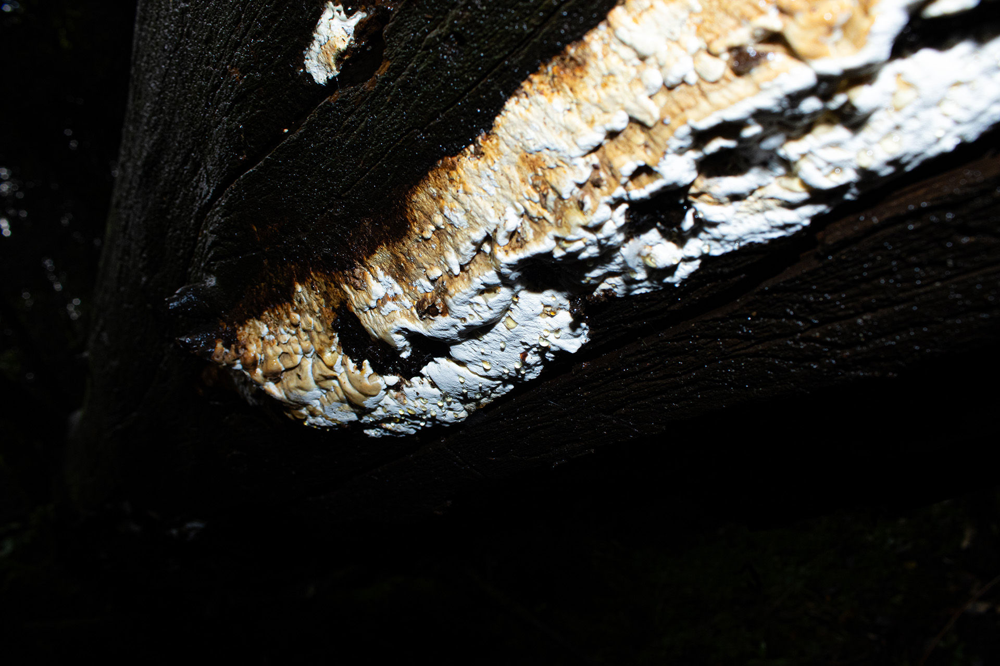

Información general
- Nombre científico
- Identificación pendiente; posiblemente Trametes sp. o género similar.
- Nombre común
- Poliporo / hongo de pudrición de madera
- Tipo
- Hongo descomponedor
- Hábitat
- Madera muerta y troncos.

Tipo de función: Descomponedor de madera. Degrada madera muerta, participa en el ciclo del carbono y devuelve nutrientes al suelo.
Relación: Indirecta. No se presenta como hongo que conecta raíces.
Sistema: Madera muerta → hongo → nutrientes → suelo → árboles.